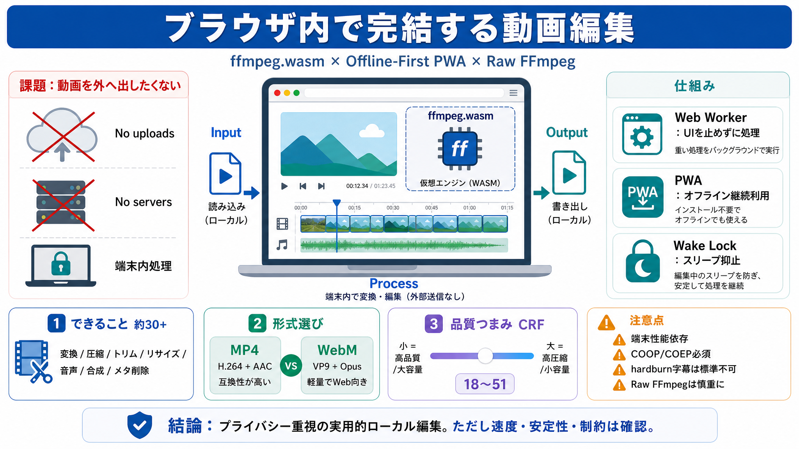

ffmpeg.wasm is not "technically" production ready! #285 - GitHub
The ffmpeg-asm.js doesn't have the security issues but is super slow. If someone wants to try it out I threw up a demo h…

The ffmpeg-asm.js doesn't have the security issues but is super slow. If someone wants to try it out I threw up a demo h…
In this issue, we would like to provide a brief explanation of this and how to work around it. The ffmpeg.wasm has COOP …
## Navigation Menu. # Search code, repositories, users, issues, pull requests... # Provide feedback. We read every piece…
#### ffmpeg.wasm is built with common external libraries, and more of libraries to be added! ffmpeg.wasm is a pure WebAs…
Issue to upgrade to 7.x, this library is great but there are various bugs in 5.x which were resolved later and can work …